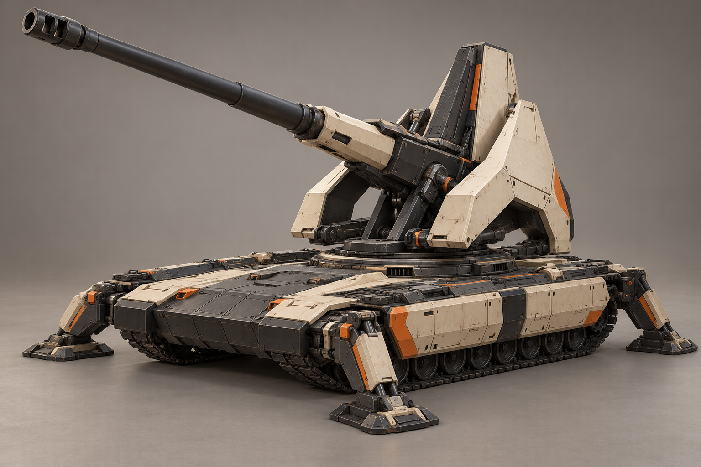
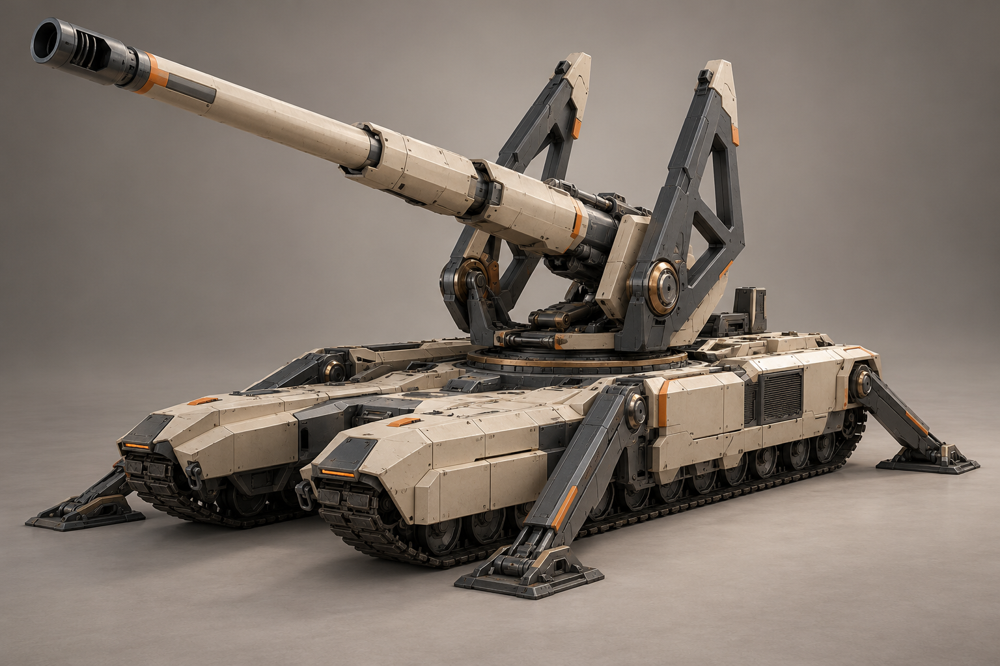
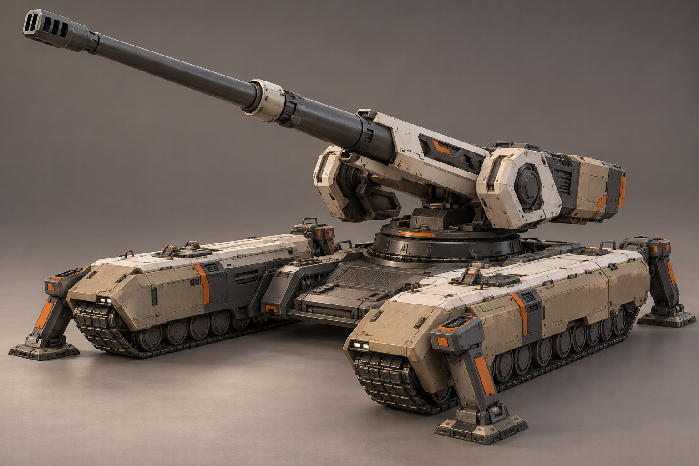
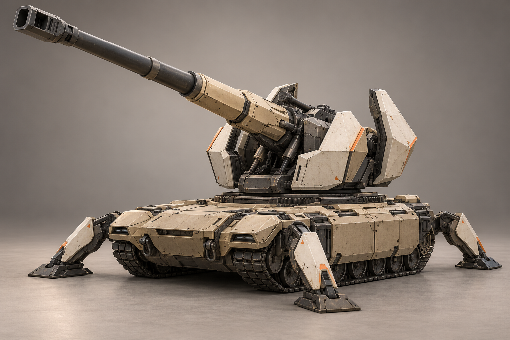
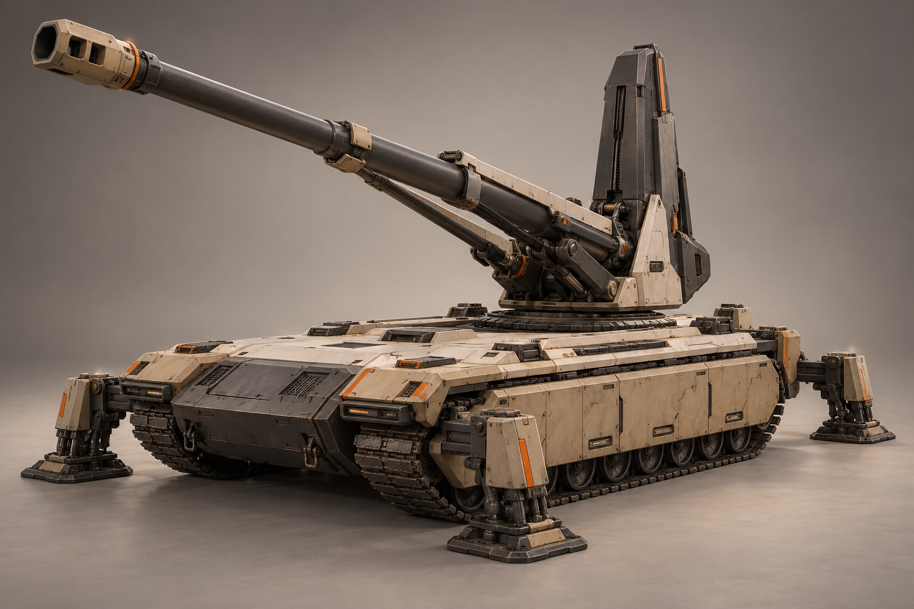
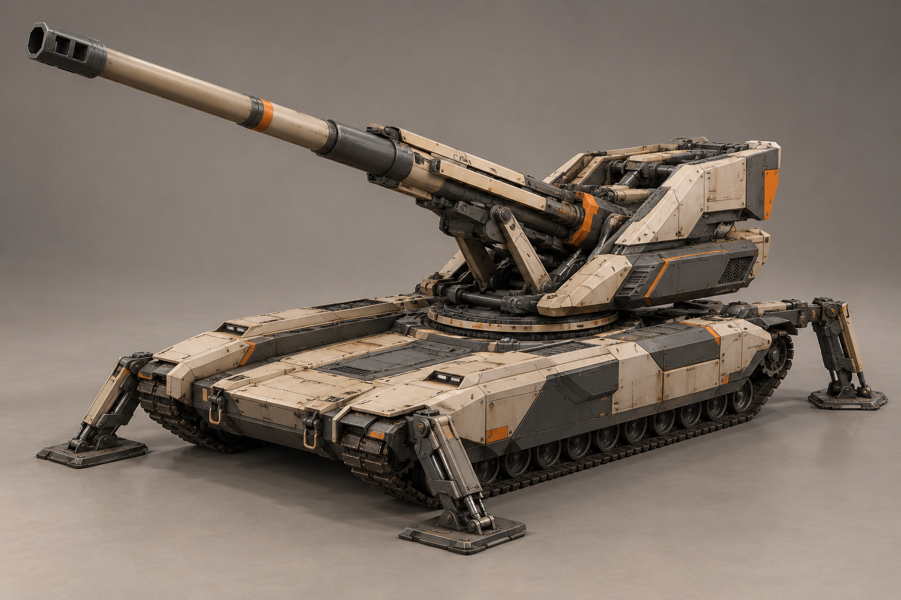
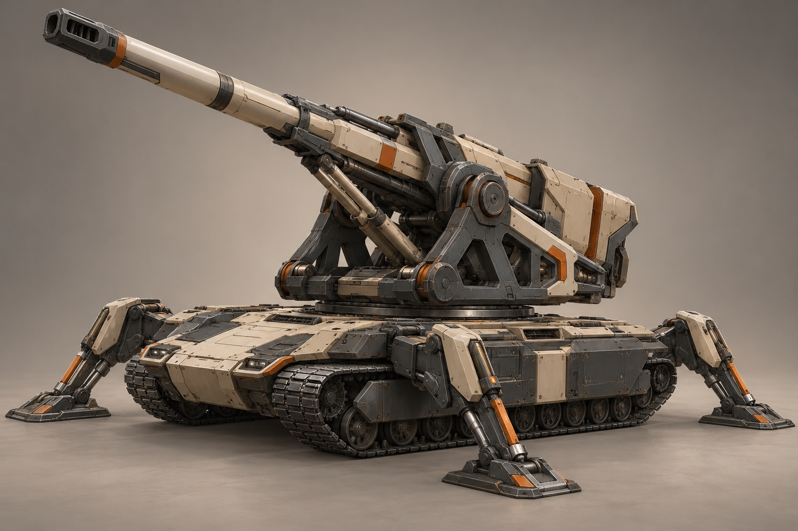

A «Монолит»

Высокая узкая казённая часть между двумя скошенными светлыми бронеплитами; низкий тёмный корпус и короткие широкие опоры.
Предложение · не выбрано · Открыть крупно · Промпт
B «Камертон»

Раздвоенная силовая вилка вокруг одного ствола и открытый центр; длинные приземистые гусеничные борта.
Предложение · не выбрано · Открыть крупно · Промпт
C «Стрела»

Длинный гранёный кожух орудия, стреловидная люлька и клиновидное шасси; минимум тяжёлых верхних плит.
Предложение · не выбрано · Открыть крупно · Промпт
D «Мост»

Широкая поперечная рама над разнесёнными гусеничными бортами; центральный артиллерийский узел открыт снизу.
Предложение · не выбрано · Открыть крупно · Промпт
E «Корона»

Короткая платформа, раскрытые сегменты брони вокруг люльки и расходящиеся опоры; выразительный развёрнутый силуэт.
Предложение · не выбрано · Открыть крупно · Промпт
F «Обелиск»

Тёмная вертикальная казённая стойка, светлая короткая люлька и тяжёлая низкая ходовая; самый строгий контраст материалов.
Предложение · не выбрано · Открыть крупно · Промпт
G «Каскад»

Ступенчатые бронекожухи, низкая центральная платформа и длинная поднятая артиллерийская группа.
Предложение · не выбрано · Открыть крупно · Промпт
H «Атлас»

Массивная открытая силовая рама с большими боковыми шарнирами; широкая база и мощные опоры.
Предложение · не выбрано · Открыть крупно · Промпт